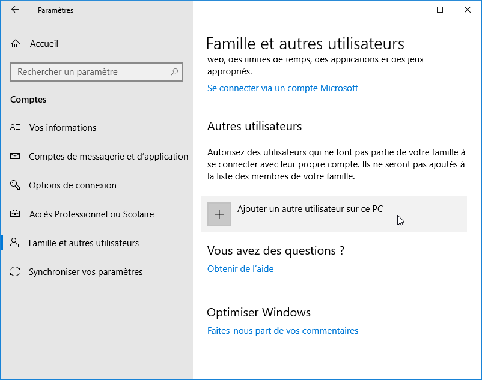

Accompagner les utilisateurs dans la mise en place d'un service
J'ai pu gerer le service informatique de l'entreprise pour creer des utilisateurs au salarie de la boite sur les pc 
Contexte
, je suis souvent sollicité pour créer des utilisateurs sur les ordinateurs de l'entreprise sans leur accorder de droits administratifs. Cela fait partie de mes responsabilités de garantir la sécurité et la conformité des systèmes informatiques. En limitant les privilèges des utilisateurs, je minimise les risques de modifications non autorisées et de logiciels malveillants. Pour ce faire, j'accède au Panneau de configuration de Windows, navigue vers la section "Comptes d'utilisateurs" et sélectionne l'option de gestion des autres comptes. Lorsque je crée un nouveau compte, je m'assure de choisir l'option "Utilisateur standard" plutôt que "Administrateur". Mon rôle est crucial pour maintenir un environnement informatique sécurisé tout en permettant aux utilisateurs d'accéder aux ressources nécessaires pour leur travail quotidien.